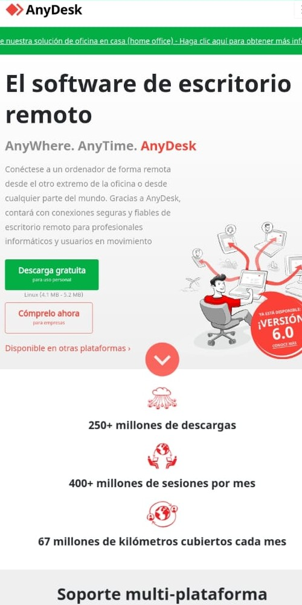
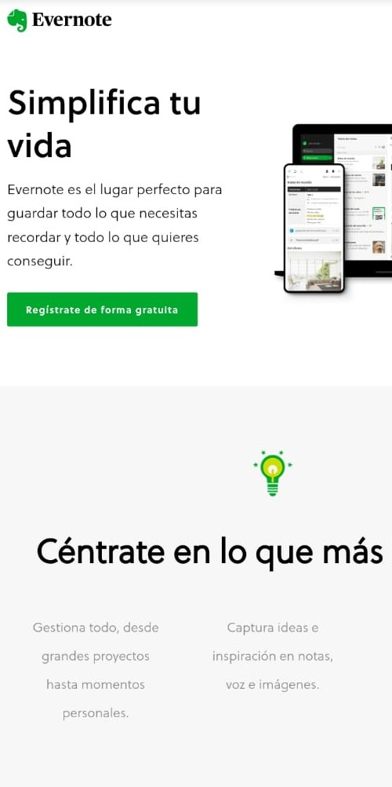

Visual Hierarchy
Addidas
A great example of Visual Hierarchy is Addidas. The design and layout rank elements on the website based on their business objectives prioritizing them. Customers who moves into the shopping page can see the impact of the shapes of the viewport on the products and catch automatically their attention.
Hick's Law
Anydesk
The Anydesk site shows a great example of Hick's Law. The site gives you two choices. You can either download a demo for the remote software with a 30 days free license or buy it with a permanent license. This helps consumers decide if Anydesk offers the best device on remote softwares.
White Space & Clean Design
Evernote
The Evernote site is very beauty in my eyes.The white spaces between graphics, margins or visuals looks the information very clear and sofistify. The green color acts as white space since it covers a lot of the page. I'm agree about simple websites are scientifically better.